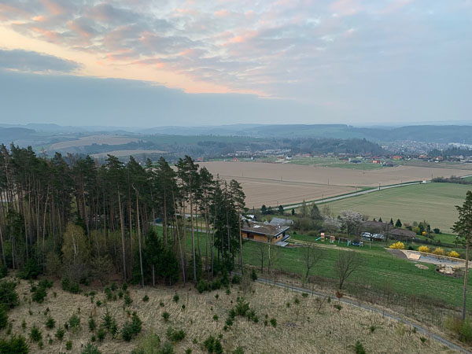
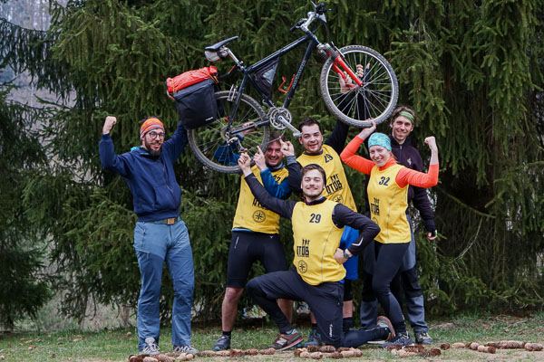
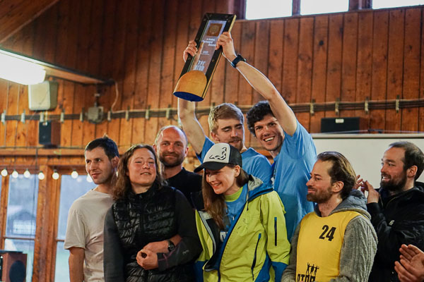

OTOB je třídenní sportovní klání, ve kterém trojčlenné týmy sbírají body plnění hravých soutěží nebo za navštěvování stanovišť v malebné přírodě . Prověří vaši odolnost, důvtip i vůli. Odmění se neopakovatelnými zážitky, novými přátelstvími a obohatí váš život. Nevěříte? Přečtěte si náš příběh, nebo lépe - zkuste rovnou na vlastní kůži! Chcete-li jít do toho, tak pozor, náš text obsahuje spoilery! Pokud chcete jít do neznámého a učit se z vlastních chyb, tak si tohle přečtěte až po vaší zkušenosti. ;)
„Mucha shání někoho do týmu na OTOB, to by tě možná mohlo zajímat”, slyším jeden večer od své milé. To vzbudí mou pozornost, a zjišťuju, o co kráčí. Dianka mi obratem dodává další info – základem je jízda na kole, týmová spolupráce, předem neznámé disciplíny a celé je to venku. Tři dny a dvě noci, za každého počasí. Její slova mi zní jak rajská hudba! Dlouhého rozhodování netřeba. Muchu ještě osobně neznám, ale už jsem o něm leccos slyšel a vím, že je to docela neobyčejný řízek.
Naši třetici doplňuje Lukáš. Asi měsíc před závodem se scházíme v Expediční klubovně v Brně, abychom se poznali navzájem a abychom vyslechli od Muchy, jakožto zkušeného harcovníka předchozího závodu, něco rad a tipů. Lukáš je od prvního momentu sympatický, ale bohužel, kvůli technickým komplikacím, musí svou účast zrušit. Přesto se však s týmem nesmazatelně propojil - vymyslel totiž název - Už jen kousek.
Čas do startu závodu se nicméně tenčí a my jsme pouze 2. Lovíme ještě ve vodách našich sportovních kamarádů, nakonec úspešně. Tým doplňuje Kamil. Ve finální sestavě se scházíme opět v Expeklubu. Další seznamování a už konkrétní plánování – co musíme vzít s sebou, jak se sbalit atp. Zjišťujeme, že (zejména Kamil a já) máme rezervy a nějaké vybavení budeme muset ještě pořídit. „Pohodinda, na to je času ještě dostatek”, říkáme si…
To jsme my. Zprava Mucha, Kamil, Hajda.
Vyprávění je doplněno obrazovým materiálem. Ty hezké kousky nejsou naše, šikovně zachytila fotografka Maruška Kozmová. Patří jí za to obrovský dík!
Své vlastní fotky téměř nemáme. Buď to znamenalo zastavit, sundat rukavice, vyndat telefon (místo třeba jídla) a zkřehlými prsty zkoušet zaznamenat kouzlo okamžiku. Nebo jsme byli pohrouženi do her a fotit nás ani nenapadlo.
V kalendáři je 11. dubna - den OTOBu
Dneska to vypukne!
… „Sakra, zapomněl jsem olepit mapy (aby se nám nerozpadly za deště)! Proč jsem to neudělal už dříve? A ještě musím jít nakoupit nějaké jídlo, co budu potřebovat. Oj, nevyselektoval jsem si nářadí, které si vezmeme s sebou. Cože, kluci chtějí vyrazit tak brzo? A to ještě chceme do obchodu pro chybějící vybavení!” Ráno se probouzím a dochází mi, že ty dva týdny uplynuly jako voda a už je čtvrtek. Zběsile začínám snášet věci na hromadu, přemýšlím co vzít, co ještě musím sehnat nebo v jakém pořadí úkoly musím splnit, abych stihl vše do času odjezdu. V tu chvíli to ještě netuším, ale závod už vlastně začal.
Takže. Chybí mi jídlo. Jdu do nejbližšíh obchodu a kupuju bez hlubšího zamyšlení co mi padne pod ruku. Není čas to ladit. „Koupím jen něco základního na přežití začátku, v průběhu závodu už budu přesně vědět, co mi schází a doplním to, jak se zastavíme v nějakém obchůdku.” říkám si v duchu. Samozřejmě ještě nemůžu vědět, že ve skutečnosti nikde pro doplnění zásob nezastavíme. Další na řadě je obchod se sportovním vybavením. Chybí mi nosič a oblečení do zimy. Ten víkend má být kosa a snad i sněžit. Jsem zoufale nepřipraven. Kamil je na tom trochu podobně a máme v plánu obchod obrazit spolu. Beru spacáky, nafukovačku, nářadí. Po patnácti minutách chůze dorážím k němu. Spocený a vyčerpaný. To nevypadá jako dobrý předstartovní ukazatel. :)
V obchodě kupujeme ty nejnutnější věci, třeba neprofukovou bundu, za jejíž službu budu, jak se záhy ukáže, neskonale vděčný. :) Kamil pořizuje čelovku, taky za ní byl rád. Čas rychle utíká, blíží se 12 hodina. Odjezd má být v jednu. Ach ach.
Utíkám domů. Balím jídlo, mapy, oblečení, bidony. Helmu. Jak jsem byl naivní, když jsem si myslel, že ještě uvařím, zaseju hrách, přesadím bylinky a to všechno v pohodovém rytmu. Kamilova příprava je svědomitostí dost podobná. Své horské kolo naposledy použil před půl rokem. Ani před tím moc nejezdil, protože mu na vyjížďce upadla klika a tka jí nevěřil a jezdil na silničce. Teď to zevrubně otestoval – jel kolem bloku, takže tak 300 metrů. To stačilo, aby naznal, že znovu mu už klika snad neupadne. A mazání řetězu? Co je to? :)
Je jedna hodina. Mucha přijíždí přesně na čas, perfektně připraven, kolo přivedené do stavu dokonalosti. Dokonce má i vlastoručně dělaný držák v autě. Nakládání trvá déle, než jsme plánovali. Než se Kamil třikrát otočí do šestého patra pro zapomenuté věci chvíli trvá. Než vše zabezpečíme taky. Nakonec utáhneme kola gumicukem a asi hodinu po plánovaném čase skutečně vyrážíme.
Prezentaci jsme zvládli včas, máme radost. :)
Tým 29 vypadá nabušeně – celá sestava si před startem prozřetelně a synchronizovaně odskočila!
Jak se blížíme k zázemí závodu, tak asfaltu ubývá, cesta se zužuje, nakonec se noříme do lesa a sklon se zprudka snižuje. To trvá docela dlouho a my začínáme tušit, že právě tuhle cestu v nějaký moment budeme muset vyšlapat. Vtipkujeme o tom. :) Najednou se stromy rozestoupí a my vjíždíme do areálu, ostatní už tam jsou. Atmosféra je nasáklá dobrou náladou a je cítit okamžitě po vystoupení z auta. Vyhazujeme věci na trávu a dáváme je do kupy. Nosič na kolo, brašny nosič, věci do brašen. Převlékáme se. Rafičky na hodinkách neúprosně běží, z repráků se ozývají výzvy k registraci. Stíháme s nevelkou rezervou. Poté se přesouváme a rychle si obkreslujeme body na mapě. Co nevidět to má vypuknout. Napětí pomalu stoupá. Na poslední chvíli stíháme ještě návštěvu toalety. Tam se dostavuje klasický předzávodní strach, zda bude papír. Je. :) Dokonce zbývá chvíle i na nalití vody do bidonů. S tím jsme už téměř nepočítali. Nakonec jsme tedy zvládli vše a za pár okamžiků už napjatě stojíme na startu. Pořadatelé nám vysvětlují pravidla závodu a zásady správného chování. Jakmile chápeme, z reproduktorů se začíná linout motivační hudba a srdeční tep se zrychluje.
Čtvrtek, 19:00.
Start
První disciplíná spočívá z krátkého běhu (cca 200m) do depa, kde si závodník osedlá svého oře a… možná jste uhádli, vyjede ten kopec, ze kterého jsme přijeli autem. Startuje se ve třech vlnách. V každé po jednom členu týmu.
Ředitel závodu Karel startuje závod a první vlna běží pro bajky
U nás startuje Mucha a razantně se do toho opírá hned zkraje. Do depa dobíhá mezi prvními. Ty, které nepředběhl, předjíždí. Na kopci dostává hrací kartu. Ta obsahuje 51 otázek, což koresponduje s 51 body, které jsme obkreslili před startem – tam nalezneme odpovědi. Bude-li správně, potvrzuje to, že jsme na místě byli a dostaneme body do celkového hodnocení. Druhým způsobem, jak zvýšit svoje skóre, jsou body za soutěže. Ty budou na povinných stanovištích. Čas a místo se dozvídáme taky tady. Mucha to překresluje, zatímco my jsme na cestě nahoru za ním.
Kamil držíce Muchův klenot, Mucha běžíce si pro něj. A fotka z depa.
Kamil v druhé vlně ztrácí trochu čas v depu. Nemůže nahmatat tlačítko na své nové čelovce. Po pár úmorně dlouhých vteřinách se ale kužel světla objeví a po chvíli začne mizet mezi stromy. Připravuju si tedy své kolo a jdu se postavit spolu s ostatními na startovní čáru. Naše vlna vyběhla do rytmu písně Smells Like Teen Spirit od Nirvany. Rozhodl jsem se to úplně nehrotit a jet pomalu. Vždyť závod je to dlouhý, nemá cenu se vyčerpat v prvním kopci. V depu se mi ale podaří pár lidí přeskočit a kolo ochotně stoupá i do kopce. Nejel jsem na sílu, neb kopec byl vážně dlouhý. Proto mě překvapila slečna, která nám při povzbuzovala slovy „Pojď! Pojď! Už jste za půlkou!”. „Vážně? Super! V tom případě můžu trochu více zabrat.” Pomyslím si. Předjíždím pár soupeřů a zanedlouho potom opravdu dojíždíme na horizont do moře světélek.
Plánujeme hrubé obrysy trasy celého závodu.
Nacházím si ty svoje světlušky s dresem číslo 27. Klekám k mapě a přemítáme, kudy pojedeme. Rozhodujeme se celkem rychle, a tentokrát asi i správně. Nejprve si ujasňujeme, která místa jsou povinná a kdy. To nám určí základní směr. Tím se vydáme a budeme sbírat všechny body, které budou v dosahu. Abychom jich stihli co nejvíc, omezíme spaní a další nepodstatné potřeby. :) Podrobněji nemá smysl plánovat, jelikož nevíme, jak nám to pojede. Jakmile toto máme rozhodnuté, ladně přehazujeme nohy přes bicykly a znovu se vydáváme do lesa, tentokrát z kopce.
Čtvrtek 20:00. Zapnout čelovky, čeká nás
první noční jízda
Do hledáčku jsme si vybrali bod K5. Je poblíž, dosahujeme ho celkem rychle, snad až příliš a přejedeme ho. Vše bylo ještě nové, působila na nás spousta podnětů, a tak jsme přehledli i kostel, i číslo týmu, který nás v duchu fair play upozornil (a kterému tedy nemůžu projevit vděčnost veřejně). Zaznamenali jsme odpověď a uháněli dál. Temnota už zhoustla a krom nejbližších metrů, které jsme si sami osvětlili, jsme viděli už jen pár světélek před námi. I ty se ale zanedlouho ztratily a my se dostali do dost neobvyklé situace. Dlouhé desítky minut jsme jeli vedle sebe a nepotkali ani kolo, ani auto, snad ani svítivé zvířecí oči. Jen tma, ticho a vítr ve tvářích. A zima vlastně. Dokonce taková, že asi už u druhé stanoviště jsem moc necítil prsty. Nesbalil jsem si rukavice, nemohl jsem je v tom chvatu najít a řekl si, že pracovní budou stačit. Nahodil jsem je, ale moc se neosvědčily. Zatnul jsem zuby a zkoušel to ignorovat. Asi o hodinu později jsem to ale vzdal a poprosil Kamila o zapůjčení jeho náhradních. Navrstvil jsem to. Ruce už byly tak studené, že mi trvalo dlouho, než se zmátořily, ale aspoň už se to nezhoršovalo. „Ještěže jsem koupil tu větrovku!”, přemítal jsem. Mucha naopak jede s holými kotníky a vypadá naprosto nevzrušeně. :)
Když je před námi kopec, mám radost, anžto to znamená, že se zahřejeme. Kopce dolů nás naopak o tenkou, pracně vygenerovanou, vrstu tepla zase okradou. Na druhou stranu rychle ukrojí kilometry. V každém případě pohyb nám zaručuje i teplo, i body. Snažíme se tedy motat pedály, jak to jen jde.
Klendra. Později v noci nám i zamrzala voda v bidonech. :)
Tohle je vlastně naše první společná projížďka, uvědomuju si. V noci taky tak často nejezdím. OTOB je úplně nová zkušenost. Sbírání bodů, nové prostředí, orientace na mapě… Všechno je to zajímavé, zaměstnává mysl a tak ani nevnímám, jak čas rychle plyne, nebo kolik jsme toho ujeli. Cestou zastavujeme u cedule Čejkovice a fotíme. Mucha je taky z Čejkovic, ale jiných. A určitě by tvrdil, že lepších. :) Je fajn, že je tam i checkpoint s památným stromem, můžeme si tedy i doplnit hrací kartu.
Byla tma, nebyl čas. Z těch pěkných míst jsme často viděli stejný prd, jako tady na té fotce. :)
Jedeme i přes Číhošť. Tahle obec je známá díky zázraku, co se tam stal. Jedeme pořád dál. Postupem času se přecijen začíná ozývat únava. U jednoho bodu jsme trochu zaseklí. Brzy se tam začnou objevovat další týmy, asi 3. Bystře odvozujeme, že tedy taky nespí a konkurence je tedy ostrá. :) Spánek je ale potřeba, a tak si shodujeme, kde složíme hlavu. Ještě vybereme tři stanoviště a pak najdeme nějaké útulné hnízdo. :)
Sjíždíme do Ledče nad Sázavou. Vybereme první bod na severu, pak sjedeme k řece, přejedeme most a zamíříme k vysílači. Z něho je překrásný výhled na malebné město. Škoda, že je tma a my ho nevidíme. :) Alespoň vidíme barvu nějakých elektrických srand a doplníme hrací kartu. Únava mezitím stále sílí. Proto směrem na další bod už pokukujeme i po vhodném útočišti na spaní. Nacházíme hřiště na hraní. Bereme. Jsou 4 ráno, asi 64 km za námi, se zimou jsme se vypořádali, a tak si rozkládáme zasloužené ležení. Mucha je zase první a snad už i spí, zatímco já ještě připojuju čelovku k nabíječce.
Někteří už leží, někteří ještě nestihli sundat ani helmu. Prostoru pro zlepšení je hromada. :)
Pátek 5:55. Neumrzli jsme, energii jsme doplnili
Co nám přichystá další den?
Po necelých dvou hodinách nás z hlubokého spánku vytahuje Muchův čiperný hlas. Snažím se taky čiperně vyskočit, ale zima mě v zápětí objímá a klátí zpátky do spacáku. Mé drkotání zubů zní jako smečka spisovatelů, kteří soupeří v rychlopsaní na psacích strojích. Tělo se mi nekontrolovaně klepe, ale teplo ve spacáku mi pomůže se znovu vzpamatovat. Na druhý pokus vstávání vychází. Mucha už je zase nachystanej!
Operativně ladíme trasu na nejbližší hodiny
Ještě před výjezdem chci něco sníst. Dávám si asi jesenku a tatranku. Housky už jsou snědené ze včera. Dožvýkat už můžeme cestou, vyrážíme! Za dvě hodiny musíme být na prvním checkpointu. Zkusíme ještě nabrat pár stanovišť, pokud to stihneme.
Jelikož jsme šli spát o jedno stanoviště dříve a brali jsme ho až ráno, schází nám čas na bod RO7. Rozhodujeme se ho vynechat, i tak budeme mít co dělat. Před Lipničkou potkáváme tým 32, tuším. Jsou úplně v klidu. „Jak to všichni dělají, že jsou tak tak nad věcí?”, ptáme se sami sebe. Makáme, nohy bolí, stále studený vítr bičuje tváře. Jak jen jsem rád, aspoň za ty Kamilovi rukavice! Kontrolujeme hodinky. Deadline se neúprosně blíží, zbývá pár minut a mi pořád ještě stanoviště nevidíme. Až najednou, žlutá vesta! Už vím, jak si připadal Jeníček v pohádce Perníková chaloupka, když zahlédl ze stromu světélko. Jedeme tam a dostáváme insktrukce, kde přesně stanoviště je. Přicházíme přesně na čas, ostatní už tu jsou, vypadají plní síly a natěšení na úkoly, co přijdou. My jsme udýchaní, vyčerpaní a rychle se snažíme přezout.
Pátek 8:02. První stanoviště s úkoly
Forester
Toto stanoviště se skládá z překážek, které můžeme zkoušet zdolat. Body dostaneme přímo úměrně tomu, kolik překážek zdoláme, a nepřímo úměrně tomu, kolik pokusů tomu budeme muset věnovat. Co si na nás tedy milí organizátoři připravili?
Slackline
Musíme překonat asi 4 metry chůzí po laně, pomoci si můžeme lanem, které je připevněno k jednomu stromu. Mucha ví, jak na to. Zhošťuje se úkolu na jedničku. První pokus úspěšný.
Slackline
2 Slackline do V
Dva s týmu se postaví proti sobě, každý na svou slacklinu. Poté se do sebe zaklesnou a postupují na druhou stranu, jejich cesty se přitom oddalují. Nedá se říct, že by správná technika byla intuitivní. Proto, i přes dobré rady, nemůžeme úkol splnit. Různě se u toho kroutíme a střídáme. Podaří se až napotřetí.
Slackline do Véčka
15s vis nadhmatem na hrazdě
Co to? Pouze zůstat viset patnáct vteřin? To zní až pozezřele jednodušše. Ani nepřemýšlím a rovnou to jdu zkusit. Hrazdu ale tvoří trubka navlečená na lano. Trochu se to mele. A je široká, drží se špatně. A ten palec nahoře to taky neulehčuje… „Deset vteřin teprve?”. Čas plyne nějak pomaleji, ale daří se vydržet. Druhého pokusu netřeba.
Slackline s lanem
Teda. Moc nevím, jaké názvy tomu dávat. Zde jde o to, přejít slackline z jedné strany na druhou, asi 4-5m. Máme lano, které máme přetáhnout po vodícím lanu nad námi. To nám, kteří nejsme zkušení artisti a provazochodci, pomáhá i balancovat a umožňuje pohyb vpřed. Jenže na tom vodícím laně je uzel! Který musíme přehodit! Na tom samozřejmě nic není, je to úplná pohoda. Tedy, alespoň to si všichni okolo mě myslí, soudě podle rad, co se na mě sypou. Jenomže, když se stojíte na tom laně, tak už jen samotná myšlenka přestat se opírat o lano a švihnout s ním vám roztřese kolena. Asi na dvacátý záškub se mi to konečně daří, úkol je splněn.
Slackline s lanem
Provazový žebřík
Tohle stanoviště vypadá asi nejsofistikovaněji. Musíme prohodit gymnastický míč zavěšenou obručí. Zatímco člověk visí na provazovém žebříku, ovšem. Mucha jde odvážně jako první. Ručkuje jak makak, u poslední příčky se lišácky opírá o míč – lépe dosáhne a dokonce si trochu odpočine. Žel, házení nohama moc nefunguje. S každým dalším pokusem jsou zádové svaly vyčerpanější a po asi třech neúspěšných hodech Mucha odpadá.
Mucha házel klasicky nohama…
Druhý pokus je na mě. Držím jsem se osvědčené taktiky v první části. V házení mám větší štěstí, druhý hod vyšel. Pecka! Zanedlouho vidíme docela jiný přístup. Holky Zrzečky buď na nohy spoléhat nechtějí, nebo je zkrátka láká využít svých artistických dovedností. Na žebříku se jedna z nich protáčí hlavou dolů a míč prohazuje naprosto elegatně a bez obtíží.
… zatímco holky nám všem vytřely zrak perfektní inverzní technikou
Oblézání stolu
Vysvětlení tohoto úkolu je snadné. Nejprve si člověk na stůl lehne, načež ho má po dlouhé ose podlézt, aniž by se dotkl země. Gravitace je ale silná a každou chvíli někdo žuchne. Ani Kamil, ani já na tohle ani nemyslíme. Mucha je odhodlaný za nás za všechny, ale ani to nepomáhá. Exekuci zvládá méně borců než, jak by řekl Jaromír Bosák, by napočítal na prstech jedné ruky dřevorubce, co pracuje celý život se sekerami a pilami všeho druhu.
Nejnáročnější disciplína
Tarzan
Na kmenu stromu je označen startovní prostor. Z něj pak závodník potřebuje kousek vyšplhat a chytnout se smyčku, aby se natáhl k provazu. Na něm se má zhoupnost a, pokud možno měkce, dosednout na další kmen. Kamil objímá první strom. Leze po něm nahoru jak gekon. Chňape po smyčce jak chameleon. Houpe se jako nějaká opice. Ale na druhý kmen ne a ne dosáhnout. Podobně jako u provazového žebříku, síly docházejí a Kamil seskakuje. Byl to heroický výkon, ale nestačilo to. Teď jde Mucha. Jeho dlouhé končetiny mu úkol trochu usnadňují. Zvládá to s grácií a charakteristickým úsměvem, dokonce i slečna kontrolorka utrousí pár slov obdivu. :)
Tarzan
Šplhání na stromy
Hlavní disciplína. Hned po příjezdu jsme dostali přednášku o technice lezení na stromy s jištěním. Jak se navázat a pár tipů. Teď na nás přišla řada. Máme asi pět minut na vyzkoušení nanečisto, potom budeme mít sedm minut na ostro. Už si ale ty instrukce nepamatuju. A taky nevím, kde sehnat sedák. A lano! Čekám jsem na střídání, ale všichni si to odnášejí. Sakra! Čas běží. Instruktor není k mání. Zkouším to nějak navázat. Už ho vidím. Přivolávám, doptávám se a on mi říká vše, co potřebuju. Žel, čas tréninku právě vypršel. Musím si to tedy vyzkoušet rovnou během ostrého pokusu. Tři minuty se houpu 20 centimetrů nad zemí. Pak na to konečně přijdu a začnu stoupat. Progres je ale značně pomalý, jsem nervozní a to nepomáhá. Mucha už je asi u druhé značky, já to nakonec celkem těsně nestíhám. Ta druhá se mi zdála úplně mimo dosah, kvůli pomalému startu. Pak jsem zjistil, že jsem koukal na místo, kde bylo uchycené jištění. Značka byla níž. No, co se dá dělat. Mrzí mě to. Mohl jsem se lépe připravit, herdek…
Na zadním stromu je vidět i druhá značka, kam se mělo vyšplhat pro 2 body
Disciplíny máme tedy všechny. Ještě nám zbývá chvilka, než se budeme přesouvat. S Muchou špekulujeme, jak poladit jeho brzdu, která začala trochu vrzat a přibržďovat mu. Taky to vypadá na vhodnout chvíli dát si jesenku. :) Mám ji v brašně, přes kterou mám přehozené Kamilovi rukavice, jež mi v noci zachráňovali ruce před umrznutím. Dám je zatím na zem, to určitě nezapomenu…
Pátek 9:57. Orientační běh
Kudy z nudy
Zatímco jsme lezli po lanech a stolech, druhá skupina pobíhala opodál po lese. Čas teď uplynul , tak se střídáme. Co nás bude čekat tady? Dostáváme papír s pravidly a 15 minut na jeho prostudování a naplánování strategie. Ve zkratce - po lese jsou rozesety stanoviště s krabičkami na čipy. Stanoviště zastupují buď město nebo horu v ČR. Každé stanoviště má své číslo. Během 45 minut budeme tyto stanoviště hledat a čipovat, které stanoviště jsme navštívili a v jakém pořadí. To hraje velkou roli, jelikož vzestupné číselné řady znamená vyšší bodování (např. řada 31 + 42 + 30 + 56 + 40 by byla za 1 + 2 + 1 + 2 + 1 = 7 bodů; zatímco 30 + 31 + 40 + 42 + 56 by bylo za 1 + 2 + 3 + 4 + 5 = 15 bodů). Míchání měst a hor však není možné, na jednom čipu se počítají jenom hory, na druhém jenom města. Čipy mají také omezenou kapacitu. Takže co teď? Hlavně nevíme, kde ty místa jsou a jaké jsou jejich čísla.
Rozhodujeme se tedy rozdělit si ČR na regiony. Jeden Čechy, jeden Moravu, jeden kus Moravy a Slezko. Pak se sejdeme u Pardubic, dokreslíme si mapu a rozdělíme se. První část hry nebudeme nic sbírat, ale pak to naskáče těmi vzestupnými řadami. Přece na to nepůjdeme hrubou silou, že. :)
Strategie má mnoho děr, ale čas startu už se nachýlil a my je odhalíme až v průběhu hry.
V tomhle momentě se usmíváme a ještě si myslíme, že je naše taktika neuvěřitelně důmyslná.
Prvních patnáct minut tedy běhéme po lese. Daří se mi najít daleko méně míst, než jsem čekal, ani si nejsem jist, zda je správně zakresluju do mapy. Na meeting pointu se setkáváme později s Muchou, překreslujeme mapu. Kamil přibíhá o deset minut později. Když doběhl na „meeting point”, zjistil, že je kdesi na okraji mapy, u hranic s Rakouskem. :) Z posbíraných informací moc chytří nejsme. Rozdělujeme si tedy práci. Kamil s Muchou budou sbírat města, já budu obíhat kolem hranic a načítat hory. Prozatím už uběhla minimálně půlka hry a my stále nemáme ani bod.
Běhání mi činí problémy, protože vlastně na kole ani skoro nejíme, moc jsme nespali a stále jsme v pohybu. Les je navíc dost měkký a kopcovitý, hlavně v oblasti Šumavy a Českých Budějovic. Hlavou se mi honí, jak jsme to měli udělat lépe. Třeba si dopředu zaznačit přibližnou polohu stanovišť, rozělit se na typy míst, ne na části republiky (a obíhat buď okraj nebo střed), a malá/vzestupná čísla sbírat hned při průzkumu. Takhle jsme promrhali hodně času a dost nás to mrzí. Takový je ale život. Moc nečeká a prostě teče, člověk se musí přizpůsobit. :)
Když se blíží konec, téměř ještě zabloudím. Diskvalifikace by byla třešinkou na dortu. Nakonec ale stíháme, čipy vracíme a vyrážíme dál.
Pokračujeme dál
Sedáme zase na kola a míříme do Lipnice nad Sázavou. Mucha tam z minula zná hostinec, je čas oběda a právě jsme vyfunili pocitově gigantický kopec (kde jsme trénovali distribuci hroznového cukru za jízdy). Kolem hostince je nezanedbatelné množství kol. Ostatní už tam zase jsou! Jak jen to dělají? Rozhodujeme se přidat. Kamil chtěl moc, já se nebránil, Mucha to akceptoval. Plán je rychlá polévka – jako zastávka F1 v boxu – a zase valit. Pak se to nějak stalo a všichni jsme si objednali svíčkovou. Prý to donesou určitě do patnácti minut, což je pro nás šibeniční termín, abychom stíhali další přesun. Ostatní už jídlo dostávají, jí, platí a spokojeně odcháze∆í, zatímco my stále čekáme. Dostáváme polévky a asi po dvaceti minutách se nám na stole objevují tři obrovské talíře se svíčkovou. „Nezdržujte se kousáním knedlíků, rovnou to polykejte”, koučuje nás Mucha. :) Já je raději vynechávám úplně, už v mládí jsem zažil lekci, co se stane s večeří, když je bezprostředně následovaná rychlým kvedláním nohou. Čas nám to ale sebralo. Víc než jsme chtěli. Nestihneme to.
Skáčeme na kola a zkoušíme to napálit, i když je to beznadějné. Nemá smysl přeskočit plánované body, asi i tak bychom přijeli pozdě. Berem K1, O3. SK4 přecijen ale vynecháme. Před koncem je dlouhý sjezd, kde brzdy nijak netrápíme. Asi tak minutu před limitem dojíždíme na konec kopce, kde je i checkpoint! To byla ale jízda! Takže jsme to dali! Asi nicméně nemusím dodávat, že ostatní už tu jsou...:)
Pátek, 13:59! Historie a hazard
Zahrádka
Stále ještě zadýchaní parkujeme kola a současně se snažíme poslouchat výklad, jež právě začal. První instrukce zní - běhat se nebude, tak se oblečte. Svojí náhradní tenkou mikinu půjčuju Kamilovi, který je asi vymrzlejší než já. Mucha a dost lidí okolo navléká krásné péřovky. Potichu závidím a kontempluju, proč jsem tak nevybaven. Tyto myšlenky ale brzo opustím, protože přichází další povídání. Vrátíme se zpátky v čase! Dostáváme potravinové lístky, nějaké krejcary a vydáváme se na cestu. Kráčíme do ochraného pásma Želivky.
Vítajó k nám! Půjdou se k nám podívat!
Po pár minutách přicházíme k místu, kde je kostel, dobově oblečení lidé a dokonce stolek s houskami a teplým nápojem. To kluky naláká a když nás pořadatelé vyzvou, abychom vyslali jednoho zástupce do kostele pro instrukce, padne to na mě. Odcházím dovnitř a kluci se řadí do fronty na housku a tu horkou šťávu! Och, jaká to lahoda pro naše (vlastně zatím jen jejich) zkřehlá těla!
Po příchodu na nás čekaly voňavé housky!
V kostele se dozvídáme, že tohle místo má zajímavou historii. Tu sice ještě neznáme, můžeme se však leccos dozvědět od „místních”. V kostele je zveřejněno asi 10 otázek, každá odpověď za 5 bodů, myslím. Další body se dají získat plněním nejrůznějších disciplín. Za jeden krejcar dostáváme jeden pokus zazářit.
Naprosto stylové stanoviště
Když chlapcům vysvětluju pravidla, přistoupí k nám cikánka, aby nás zlákala svým výřečným jazykem k hazardní hře. „Tak vám to vysvětlím ukázkou”, říkám klukům, poněvadž jsem pochopil, že jim stějně nic nevysvětlím, budu-li se muset o pozornost přetahovat se sličnou cikánkou. Dávám jí krejcar. Mým úkolem bude chytit klíč, který upustí, zatímco si budeme hledět do očí. Za jeden peníz mám tři pokusy.
Naše oblíbená cikánka :)
To ale netuší, že i já jsem dřív hrával podobnou hru, ale na druhé straně a znám ty fígle. Reakce je zpožděná, proto je nutné chytat níže. První pokus hned vyšel. Ochutnaje sladké plody harazdní hry, rozhodl jsem se, že ani nebudu usilovat o hledáním odpovědí historických otázek. Dějiny mám sice rád, ale tady by mě mrzelo přijít o ty zábavné disciplíny. A OTOB jsme si přijeli užít, ne to hrotit an body (ve výsledcích je pak vidět, že jsme jediní, kdo to takhle odpískal). Nachomýtnu se u jednoho vyprávění, odpověď zaznačím, ale tím s investigativou končím.
Naplno se místo toho vrháme do pouťových her. Vytahování bonbonu z mouky. Hladké mouky. Pusou. S namočeným obličejem. Nebo shazování plechovek. Či vytlačování nabručeného medvěda z kruhu. :) Napětí panovalo u stánku, kde se úkol vybral hodem kostky. V paletě možností byla výdrž (třeba plank), zazpívat, rozesmát někoho, udělat dobrý skutek a podobné. Padla mi výdrž, což bylo totálně v pohodě. K dalšímu hodu kostkou se ale už nikdo z nás neodvážil. Mezi úkoly bylo ustřihnou ze stromu bonbon po slepu, tužkou na provázku se dotknout 13 značek, hodit polenem do dálky nebo lovit rybičky magnetem. Různě jsme mezi hrami přeskakovali, královsky se bavili, dokonce tak dobře, že jsme asi nestihli utratit všechny mince.
Medvěda bylo lepší moc nedráždit
Jedna z postav, hrající ženu z nevěstince, zkoušela ulovit Kamila. „Nechtěl by sis jít ’povídat’ někam za kúr, kde budeme sami?”, ptá se ho a pomrkává. Kamil byl zprvu trochu zaražen, ale po chvíli podlehl a dokonce začal ukecávat on ji. Dost překvapená se to snažila zvrátit a nakonec musela trochu vystoupit z role a poslat ho pryč. :)
Tady se Kamil spokojeně láduje houskou :)
Po skončení disciplíny jsme si ještě poslechli andělský zpěv, přání kněze, ať se dobře šlape (což kvitovala zejména zmiňovaná nevěstka :)) a zatímco se závodníci začali vydávat na další cestu, náš tým se ještě trochu zdržel s cikánkou. Za přebytečné peníze ná ještě každému vyložila budoucnost z karet.
Tady se spokojeně láduju houskou já :)
Najednou koukáme, že jsme zase poslední! Vybíháme za ostatními. A tím během mám na mysli to, že Mucha docela běžel, já svižně kulhavě klopýtal a Kamil se na to rovnou vyprd. :)
Fotografie dvacetidvou úžasných lidí, kteří nám tenhle zážitek zprostředkovali
Přesun
Na pořadu dne je nyní další disciplína, začít má v 16:30. Dost času na to, abychom cestou chňapli i SK2. Ledaže… Ledaže by to bylo hodně do kopce, do lesa, kde jsou spadané stromy přes cestu a vyžadují přenášení kola. Ledaže by ten bod byl hodně ukrytý a ledaže bychom si nebyli jisti nápovědou, protože přesně neumíme pochopit spojnice vrcholů. Tak v takovém případě by času na přesun asi dostatek nebylo. Což se nám přesně potvrdilo! (Po závodě jsme se doptali a zjistili, že kříž, co jsme hledali, byl vrytý do kamene a ten byl dost v listí. Teď, v době psaní, si však uvědomuju, že jsme neprojevili dost snahy v hledání, mohlo to být lepší.) Čili i přes nasazení, zdolání dost výškových metrů a snahu, bod jsme nenašli a na další stanoviště dojíždíme pozdě, vyčerpaní a… kdo by to byl tušil, ostatní už tam byli. Našim příchodem jsme se sice dostali do namakaného týmu, ale taky dostaneme penalizaci -100 bodů. To se nám nepovedlo.
Pátek, 16:35. :/ Sjezdovka
Sněhové řetězy
Stojíme u sjezdovky a to nevěstí nic dobrého. Stejně jako u ostatních stanovišť, na vysvětlování nemusíme dlouho čekat, dostává se nám ho klasicky, během vydýchávání a přezouvání. Vlastně ne, tady jsme slyšeli už jen půlku. Naštěstí tady pravidla komplikovaná nejsou. Musíme dojít nahoru, přichystat si tam nosítka s pacientem a pak s ním urychlěně seběhnout dolů a znovu nahoru. Očekáváme divokou jízdu a abychom chudáka pacienta nevyklopili a nespadl nám třeba na nohy, přivazujeme ho. Část týmu přemýšlí, jaký způsob nesení a střídání bude efektivní. Část, včetně celé dvacet sedmičky, se rozhodne to tentokrát prostě odbejčit hrubou silou. Jsme připraveni, stopky se zapínají, vyrážíme! Pacientův charakter jsem chtěl z důvodu napětí prozradit až na konec, ale fotky mě předběhly. Nu což. :)
Pacienta nám skvěle pomohl přivázat i borec z jiného týmu, co se spletl. :)
Nesu s Muchou vepředu, dozadu nevidíme. Sbíhání jde skvěle, jako bych ani nic nenesl. Muchu už od rána bolí koleno, občas šlape jednou nohou. Tady to dostává pěkně zabrat, on však projevuje pořádnou dávku hoževnatosti. Cesta utíká vážně svižně, ostatní se dožadují střídání. Tak jo. Celkem rychle jsme dole u otočky. Tam si to zase beru. Cesou vzhůru ztrácíme méně tempa, než bych čekal. Je to naprosto vražedné! Má energie mizí rychleji než David Copperfield. „Střídám, střídám” sípu a hned po předání madla odpadávám. Mám co dělat, abych i bez zátěže stíhal partu s nosítky. Teda, co kecám. Prostě nestíhám. Vzdalují se. Po chvíli dochází šťáva i jim, ale střídat už nemá kdo, neb nás nechali za sebou. Nakonec se přecijen ještě vzepřeme do finiše, za různých ryků a vzdechů vbíháme za čáru, nosítka zahazujeme na zem a podle očekávání se na ně hroutíme. Po chvíli už jsme částěčně zregenerovaní a schopní tvářit se na fotce, jako bychom právě neběželi v nejvyšší tepové frekvenci v životě.
Náš záchranářský tým 0 + 7 + 27 + 30
Pátek 19:53. Slunce mizí za obzor, čeká nás
druhá noční jízda
Co dál? Musíme se podívat do mapy, znovu se zorientovat a vytyčit si nejbližší cíle. Klekáme k mapě a po nalezení trasy zjišťujeme, že ta tráva byla dost mokrá. Slunko slábne, vzpomínky na zimu předešlé noci jsou stále čerstvé a mokrá kolena mě tak radostí nenaplňují. Taková školácká chyba!
Kamil někde zaslechl, že se jeden tým chystá na polévku. Lobuje a snaží se nás tedy k návštěvě restauračního zařízení také přesvědčit. Je to možnost, kde mi trochu vyschnou kolena, napadá mě. Muchovi se asi líbí, že by se tím omezilo Kamilovo kňourání. :) Tak se jde. Ocitáme se v hotelu, jehož restaurace je překvapivě téměř plná. Některé týmy tam opravdu jsou. Jeden má problémy s čelovkou a po domluvě si ji Mucha bere k našemu stolu a zkoušíme ji opravit, což se nakonec podaří. Já potřebuju tu svou nabít, ale vůbec mě to nenapadne. Taková školácká chyba! Už v předchozí restauraci jsem mohl, ale neudělal to. Personálu jsme se asi nelíbili a jídlo nám nenabídli. Dokonce ai tu polévku ne, a tak jsme seděli s kofolou mezi hotelovými hosty, kteří měli k dispozici bufet a brali si, co hrdlo ráčilo. Alespoň jsme si trochu odpočinuli a zahřáli.
O to větší šok to je, když znova vylezeme ven. Už je dost tma, což mi připomíná mou vybitou čelovku. Napichuju ji na promrzlou powerbanku, dokud je ještě trocha světla a lze jet bezpečně bez ní. To netrvá dlouho, naštěstí mi Mucha půjčuje svou náhradní.
Jedeme, abychom se zahřáli. Celkem přituhlo a to je teprve začátek noci. Ach, ty Kmailovi rukavice, kdepak asi jsou… Tentokrát se rozhoduju zkusit to utlumit už v zárodku a při hedání body SK1 si vytvářím alobalové ponožky a návleky na kolena. Skoro se mi i zdá, že to funguje, především na kolenou. Noční silnice, krom těch hlavních, jsou prakticky opuštěné. Projíždíme nadaleko stanoviště, které je povinné pro repre týmy. Ve 4:40 ráno pojedou vlakem zastávku pryč a pak se budou vracet po svých zpět.
Šlapeme, jedeme, sbíráma body. SK1, RO4, Ž1, PS6, RO2. Chceme i S3, ale to už nedáváme. Projíždíme nádhernou Zručí a už ve městě se silnice prohne nahoru a svůj stoupavý charakter si bude držet poměrně dlouho, až na rozhlednu. Už je tma jako v pytli a jak se v kopci roztrháme, vidíme jen světýlka. To Kamilovo je pořád dál a dál. Zastavíme a čekáme. Opravdu to trvá. A když je blíž, tak si všimnu, že se pohupuje. „Sakra, on jde. Možná má defekt nebo problém! Jedu mu naproti.”, říkám Muchovi a šlápnu do pedálů. Kamil defekt nemá, ale už je tak znavený, že se bojí usnutí na kole a raději z něho slezl. Operativně tedy měníme lokalitu na spaní. Rozhledna je už jen kouskek ;), dostaneme se tam a najdeme nějaké útulné místo. Je zhruba půlnoc. S Muchou jdeme ještě na rozhlednu, a protože není vidět výhled, zabavíme se informačními panely a tlačítky s německým povídáním, nebo co to bylo. Dole pak ještě zkoušíme vystrašit tým, jež jsme z rozhledny viděli přijíždět. Naše snaha byla marná, měli pro strach uděláno. A ten pokus bych pěkně marnej, inu, ta únava byla znát i na našich nápadech. Při přípravě ležení smlouváme o délce spánku. Mucha navrhuje 3 hodiny, Kamil tak 6. Nakonec děláme kompromis – 3:30. Mě jen trochu mrzí, že odjedeme zase za tmy a neuvidíme ten výhled i během dne… Mucha nastaví budík a zavíráme oči.
Foto z nočního checkpointu, kde jsme teda nebyli. Pocity vyčerpání a zimy jsme si ale rovněž užili. A foto z nádherného rozbřesku.
Sobota, 6:02. Jsme za půlkou.
Závěrečný den
„Hoši, vstávejte!”, zahřmí Muchův hlas a vytrhne nás ze spaní. Zamžouráme očima do ranního světla. Zaspali jsme, ten náš jediný budík z nějakého důvodu selhal a teď je 6 ráno. Před dalším checkpointem jsme chtěli stihout 4 body. Nemáme šanci. Ale 3 ano, a v pohodě. Nemusíme chvátat. Balíme se, dáváme snídani (tatranku a kešu oříšky) a já si ještě jednou vyběhnu na rozhlednu. Už máme za sebou dvě noci, jsme unavení a před námi stále ještě 10 hodin. Stále tak dvakrát delší, než co považuju za dlouhou víkendovou jízdu. Počasí je ale super. Obávali jsme se předpovědi, která slibovala na sobotu i sníh. Zatím to ale vypadá slibně.

Ráno na rozhledně
Ranní přesun
Vyrážíme na S3, a budem-li stíhat, tak před checkpointy ještě RO1, snad i PS4. První bod v pohodě. Pak projíždíme mezi chekpointy. Zastavujeme, kontrolujeme mapu a snažíme se odhadnout čas, zda-li stihnem oba body. „Vyjedeme na rozhlednu, pak uvidíme, kolik času budeme mít”, se nakonec shodujeme a šlapeme do pedálů. Organizátoři na nás mávají a volají „Jedete špatně, tady je ta odbočka!”. „Na to je ještě moc brzo”, křičíme zpátky a mizíme v dálce. K rozhledně a hlavně v Petrovicích je to masivně do kopce. Houžavnatě odšlapáváme, zapisujeme si odpověď a rozhodujeme se jít do rizika. Času sice moc nemáme, ale zpáteční cesta bude dost z kopce. To zvládneme! Opíráme se do toho, bod bereme, času ale opravdu zbývá málo. Chvíli i přemýšlíme nad tažným lankem, abychom drželi vyšší tempo, ale potenciálně tažený to kategoricky odmítá. Díky vidině brzkých sjezdů – a tím pádem odpočinku – se nešetříme. Ve sjezdu si užíváme krájením zatáček a o chvíli později už víme, že to stihneme. Tempo trochu zvolníme, vydýcháme a přijíždíme tak akorát. No, a hádejte, co ostatní… :)
Sobota, 8:54. Další originální aktivita
Smyslová olympiáda
Na tomto bodě si máme nalosovat partnerský tým, se kterým budeme postupně zdolávat každé ze šesti připravených stanovišť. Na los vysíláme Kamila. Jeho ruka nám předurčuje tým 24. Jak se v zápětí ukáže, lépe to vylosovat snad ani nemohl. :)
„Trojnožka”
Namíchat se do dvou trojic. Každá trojice si stoupne vedle sebe do řady a dvěma šátky/lany si svážou vnitřní nohy. Následně na čas běží slalom. Lepší čas se vybere a porovná s ostatními skupinami. Ve světle téhle skutečnosti stavíme jeden A-tým a jeden sranda-zkušební tým. Tady jsme dopadli relativně dobře.
Trojnožka
Smyslové odhady
Na stanovišti jsou tři místa. Na prvním je sluchové pexeso - kostky, naplněné různými materiály. Naším úkolem je poslepu a po zvuku napárovat ty stejné. U druhého na stromu visí kanystry a závodníci mají sestavit seznam podle hmotnosti. Třetí stanoviště si nepamatuju. Úspěšnost taky nevím. Ale bylo to fajn. :)
Odhadování hmotnosti
Výměna duše
Na místě leží 2x3 kola. Naše šestice se má rozdělit na dvojic (tak, aby týmy byly namixované) a každá dvojice musí vyměnit jednu duši. Ovšem pod podmínkou, že na kole může pracovat jen jedna levá a jedna pravá ruka (přičemž nemohou obě patřit stejnému majiteli).
Výměna duše
Tady jsme to naprosto natrhli! Kamil nám vzrušeně popsal svou zkušenost: „Řekl mi jen: ’Tady to drž’, zarval tam montpáku, rychle to objel, vytrhl duši a zpátky. Netrvalo to asi ani minutu!”. Naše dvojice byla o trochu později a Muchova chvilinku po nás. Paralelní tým zatím stále ještě duše tahal ven. Tohle byla opravdu smršť, sami jsme skoro nemohli uvěřit!
Ti rychlejší pak mohli udílet rady :)
Skládačka
Pravidla téhle disciplíny byla přímočará. Na vyznačeném prostoru bude rozhozených 6 kartonových čtverců. My budeme mít zavázané oči (voňavým šátkem), krom jednoho navigátora. Za jeho pomoci čtverce sesbíráme a pak z nich budeme tvořit 2D obrazce. „Maximálně jich je 12”, dozvídáme se. Borci z 24 zase netráceli čas. Jeden se ujal navigace, druhý už deset vteřin po vysvětlení pravidel měl těch 12 obrazců v hlavě. „START!”, borec nás dovede k obvodové čáře a vyšle dopředu. Jak zakopneme o karton, neseme ho zpět. Trvá to chvilku a skládáme. To má ještě větší spád. Lup, lup, lup, hotovo. Tempo jak u výměny duší. Připadá mi, jako bychom trhali rekordy.
První fáze, přinesení dlaždic
¯\_(ツ)_/¯
Pátou disciplínu si bohužel nemůžu vybavit. :/
curling
Sranda. :) Na hrací desce jsou vyznačena 4 bodovaná pole. Jedno obrovské za bod, tři malé za 2, 3 a 4 body. Aut je za 0 bodů. Hází se takovým mini curlingovým kamenem a při pár testovacích hodech si všímáme, že je deska křivá. Chceme-li dohodit do zadní části na víc bodů, musíme házet obloukem. Tady jsme si taky odnesli docela rozumný počet bodů, myslím. :)
Dramatická fotka curlingu
Máme radost, poplácáváme se po ramenou a najednou koukáme, že jsme zase poslední, ostatní už zahájili přesun na záchranu druhů.
Sobota, 10:38. Předposlední disciplína.
Záchrana druhů
Přijíždíme do malebného prostoru, kde se našemu týmu snad poprvé dostává možnosti si odpočinout. Dokonce si leháme na trávu! Doplňujeme vodu! Chroupeme oříšky! Je i docela teplo, naprostá fantazie!
Následující hra spočívá ve sbírání čápů, kun a štik. Aby však byly započítané, musí přežít, tzn. musí být nasbírána i potrava. Důležité je, kolik jakých zvířat se nasbírá, dokonce i kdy. Hrát se budou 3 kola (aka roky), každé kolo je složeno ze čtyř pětiminutových intervalů (aka ročních období). Tým běhá na předem určená stanoviště, kde najde obrázek zvířete (1 stanoviště = 1 typ zvířete). Po donesení zvířete se podle druhu a akutálního ročního období změní jeho hodnota (např. komár donesený v létě se znásobí na 5 komárů, ale v zimě je bezcenný a nebude se počítat žádný přínos).
I tentokrát jsme spojeni s dalším týmem – 25, Tomovo oko. Společně se budeme snažit o nahroucení nějakých těch bodů, ale hlavně o zábavu. :). Kompletní sestavu ještě doplní, v našem případě mimořádně atraktivní, asistentka, jež bude neomylně počítat naše přeživší zvířata a kontrolovat, zda neděláme chyby.
Tady je vidět „schéma plodnosti”.
Pokud patříte mezi ostatní závodníky, tak pravidla nemusím dále vysvětlovat. Nepatříte? Pak to také nemusím vysvětlovat, alespoň se lépe vžijete do naší situace. Maje pouze rámcovou představu, zda to celé chápeme, se spouští hudba a je odstartováno!
Volíme doporučenou strategii - ten nejlínější (já) zůstane sedět v domečku, počítá donesené zvířata, udržuje přehled a diriguje ostatní, co mají nosit. Ostatní svižně běhají a nosí. Nejprve se rozhodujeme zachraňovat štiky. Mají totiž nejsložitější potravní řetězec a v pravidlech bylo, že musíme zachránit alespoň po jednom z velkých zvířat. Chceme to mít z krku co nejdříve. Zadávám každému úkol, pohodlně se usazuju a přemýšlím, co bude potřeba dále…
Najednou jsou tři zpátky. Ptám se co donesli, hledám koeficient pro dané období, zjiš… dobíhají další dva. Všichni horlivě očekávají další instrukce. Posílám je pro to stejné, to se určitě bude hodit. Zase někdo dobíhá. Napsal jsem teď správný počet? Cože to donesl ten druhý? Asistentka se jen mile usmívá a poradit mi mimo pravidla nechce. :) Zase jsou tady, neuvěřitelně rychlí. Kam je mám poslat teď? Co je v tohle období v kurzu?! Ááááá! Nestíhám to psát, vymýšlet. Ten systém zapisování je pomalý, složitý a nepřehledný. Rychle vybírám další várku zvířat, pak se kvapně snažím vymyslet, co budou další, abych si vytvořil rezervu. Během té chci vyprodukovat vhodnější systém. Kamarádi běhají jak pilné včelky, opravdu makají (krom Kamila ;)). Mění se hudba, takže už je podzim.
Když dohraje hudba, všichni sedáme, vydýcháváme (krom mě, já už sedím a tep mám v pohodě :)) a připravujeme se na další kolo. Tenhle moment potřebuju využít na přípravu přehlednější tabulky. Dozvěděli jsme se, že štik jsme nasbírali asi 6 místo 8, což vycházelo z mých chaotických poznámek.
Tady se mračím, první rok byl náročný
V dalším roce se soustředíme na čápy. Ti nejsou ani tak komplikovaní z pohledu potravního řetězce (štika měla 4 úrovně, narozdíl od 3 čápů a kun), ale taky mají blíž stanoviště. Součastně s tím jsem schopen zapisovat pružněji, což mi umožňuje dávat rychlejší a přesnější zakázky. Na konci roku máme asi 13 čápů (už si nepamatuju) a velkou zásobu oříšků do dalšího roku.
V posledním roce máme ten systém docela vychytaný. Zvířata nosíme ve velkých číslech, zapisování už je odchytané a umožňuje nám střídání. Takže i já zkouším opojné pocity, zejména když jsem běžel s veverkou na poslední chvíli. Její stanoviště je daleko, roční období končilo. Vteřina tak může rozhodnout, zda se bude počítat za tři, nebo přinesu jen jednu a na konci roku nám chcípne jedna kuna. Makám dlouhou rovinkou k našemu stanovišti. Spoluhráči běžící proti mě mi říkají, že podzim ještě je, ale už je na sklonku. napínám všechny síli a sprintuju k tomu našemu košíčku. Jóóó! Prásknul jsem to tam, hroutím na zem, hudba se mění. Při odevzdávání papírku jsem si připadal jako bych dával touchdown.
Kun se nám podařilo nasbírat už hodně, čas ještě není vyplýtvaný, tak chytáme ještě čápy. Jako u ostatních her, na začátku jsme měli problémy, ale po lepším pochopení pravidel a nástrah jsme hbitě upravovali strategii a v průběhy hry se razantně zlepšovali. Skóre je tedy o dost menší, než by bylo s nějakou předchozí zkušeností. Míchá se ve mně pocit rozladění („Ach jo, kdyby nás to napadlo hned, byli bychom na tom dramaticky líp…”) a hrdosti („Rychle jsme se adaptovali, dobře my!”). V ten moment jsem o tom ještě tak úplně nepřemýšlel, ale myslím, že mi to i trochu pomohlo uspořádat si myšlenky v hlavě a obohatilo mě to i do běžného života. Páč život taky každý žije napoprvé a musí se pružně přizpůsobovat. Dokonalý! :)
Asíci.
Finiš
Z poslední disciplíny odcházíme ve zvláštním rozpoložení. Uvědomujeme si, že už další hra nebude a že za 4 hodiny máme být v cíli. Vybíráme asi 40km trasu, na které leží ještě 4 body. Nemusíme ani tolik chvátat, ale stejně ani nemůžeme, protože je to buď dost do kopce, nebo v celkem hustým terénu. Některé kopce si zkracujeme zpíváním. Teda, „zpíváním”, rozumíme si. :) Přesto ale vnímáme vysokou únavu a do cíle se těšíme. Na téhle trati už ostatní týmy potkáváme docela frekventovaně, s některými se kus trasy vezeme a je to fajn. V cíli nás pak bude ještě čekat Dothlon, ale netušíme, jakou bude mít podobu.
Mini brod na konci drsného kamenitého sjezdu. Ani ten nás nezastavil. Ačkoli i Kamila bylo namále. :)
Dojezd do cíle
Když přejíždíme mostek, kterým začínala naše pouť, zalívají mě silné emoce. Tak už jsme „doma”! V jednom kuse a zdraví! Všechno jsme to zvládli a, navzdory mému průběžnému rouhání „Kluci, to je divný co? Pořád nikdo z nás nepích!”, neměli ani defekt. Přijeli jsme do areálu a cítili se skvěle. Tentokrát jsme nedojeli jako poslední a mohli jsme chvíli odpočívat. Čas se však brzo naplnil a všichni se přesouváme na hřiště k závěrečné, dodělávací, disciplíně.
Sobota, 16:00. Závěrečná ždímačka.
Dothlon
Pravidla zní: Jsou k dispozici dvě běžecké trasy. Jedna měří 200m, vede po rovině. Druhá má asi 850m, některé části jsou ve vysoké trávě s drny, je tam kopeček zvaný kardio zóna, a pak i odpovídající seběh. Tým bude sbírat body za uběhnutá kola. Krátké je za pouhý 1 bod, delší za šťavnatých 8. Ale! Tým má k dispozici ještě 2x1,5l lahev s vodou. Žel, nemělo to nahrazovat občerstvovací stanice. Sloužilo to jako zátěž. Bodové hodnocení se tak zvýšilo z 1b na 3b, nebo z 8b na 12b. Posledním pravidlem bylo, že minimálně jeden z týmu musí čekat v depu, nemohou běžet všichni zároveň. Identicky jako u ostatních her jsme byli vystaveni dilema – jaké okruhy běhat? Jak se střídat? Co ta zátěž? Bude někdo se zátěží běhat stále malá a u velkého se budou dva po kole střídat? Budeme všichni běhat velké a střídat průběžně?
Start finální disciplíny
Nakonec volíme to, co nám přišlo jako nejdrsnější a zároveň nejvíce body přinášející. A a B vystartují na velký okruh, A se záteží. Ten pak zátěž předá a čerstvý (C) ho vystřídá. B (ten co běžel bez zátěže) dá rovnou kola dvě. V druhém kole tedy běží B a C (zátěž). Po druhém kole má B nárok na střídání, přičemž A za něj naskočí a od C si vezme vodu, aby C nemusel to martýrium dělat dvakrát hned po sobě. A tedy běží znovu jak na startu, C po odlehčení běží své druhé kolo a B jde do depa. Potom půjde střídat místo C a od A by měl sehnat lahve…
Borec jak z titulky běžeckého magazínu
Už asi teď bystrý čtenář cítí, že tento systém je velmi komplikovaný, křehký a vyžaduje vysokou souhru. Jenomže my neběháme stejně rychle a v tom náročném rytmu to stejně nejde tak hladce. Nakonec tedy musí makat každý, na koho to zrovna vychází. Mucha jede naprosto naplno a když dobíhá do depa, tak nějak je tam zrovna někdo, kdo právě přiběhl a střídat nechce. Tak běží několik kol v kuse. Já dobíhám velké kolo, naprosto vyčerpán a dostávám zátěž. Nééé. Mám obrovskou žízeň a v tento moment ji nejvíce fyzicky i psychicky prohlubují právě ty lahve. No nic, musíme prostě běžet, ignorovat zapovězenou vodu a snažít se neumřít.
Kardio zóna
Čas se neskutečně vleče, nezbývá tak než zatnout zuby, dát lahve na ramena a nepřestávat kmitat těma nohama. Potom se přecijen začíná blížit konec onoho bolestivě dlouhého interavalu. Na velký okruh už to není, a tak na závěrečné 2 minuty běháme malý. Závěrečný odpočet zní jako vykoupení. Většina lidí padá k zemi na trávu jako u těch sněhových řetězů a pak už nevím. Otevírám tu láhev vody, začínám pít a najednou nevnímám nic než tu úžasně tekutou a hladivou chuť vody. Všechno ostatní na chvíli přestává existovat…
Vykoupení!
Během pár krátkých minut – zajimavé, najednou se plynutí času opět zrychlilo – jsme v pořádku, šťastní, vydýchaní. V zápětí se shromážďujeme na závěrečnou společnou fotku a už v tento moment mi začíná být líto, že je to za námi. Ach, těch pár dnů bylo naprosto úžasných! Vlastně to byl jeden dlouhý, nezapomenutelný a obohacující zážitek. Bylo to poznání party skvělých, hravých a férových lidí. Byl to závod, který nás naplnil inteznivními pocity štěstí, radosti, spokojenosti a vzpomínkami, které se řadí mezi ty nejvýraznější. Těžko vyjádřit všechen ten enormní vděk, co pociťuju. Ten patří nejen, ale zejména, organizátorům, kteří takoví podnik vymyslí, připraví a odřídí. Kteří napumpují svou energii do toho, aby ostatním dopřáli možnost, něco tak skvělého zažít.
Jedna šťastně spokojená banda!
Sobota večer. Čas už plyne jinak.
Áftr párty
Je tedy dobojováno.

Týmy po dojezdu! Náš a další, značně tvořivější. :)
Teď je vhodný čas na to se dát zase dokupy, čili umýt se, zahřát se, najíst se. V tomto pořadí. Jdeme k autu, vzít si čisté oblečení. „Hele! Moje zimní bunda! Skoro jsem zapomněl, že ji mám!” och, jaké to příjemné shledání! Čapnu ji a míříme do sprch. Mračna páry z každé kóje přispívají k příjemně hřejivé atmosféře. Svkléknout je po potřeba už na chodbě, kde je pořád kosa, to nás ale rozhodit nemůže. Když stahuju gatě, na zem se vysype stříbrný prach. Jejda, moje návleky na kolena! Ještě necelých 24 hodin předem byly v celku. Snažím se ten bordel nahrnout pod své špinavé oblečení, aby se neroznesl a pak hurá pod vodu. Nečekám dlouho a přichází na mě řada. S.L.A.S.T. :) Momentů, kdy jsem promrzl na kost bylo dost, těch opačných, kde jsme se zahřáli, ne tolik. Mohli jsme si sice s Kamilem spojit spacák, ale o tuhle příležitost jsme se obrali. :) Tahle horká sprcha vše vynahrazuje. Na studené chodbě se oblékám, i do té milé bundy a za chvíli už je vytopená. Umyto a zahřáto je. Nyní to jídlo. Ještě předtím ale uklízíme věci do auta, uděláme pořádek a počkáme na sebe. Pak společně – jako ty právě uplynuvší dny – jdeme pro jídlo. Řada není krátká, ale personál šikovně a hbitě nakládá jednu porci za druhou a fronta rychle postupuje. Když usedáme ke krmi, na pár momentů se zastavíme a v duchu projevujeme vděčnost, za obsah talíře před námi. Je to nyní skutečně zasloužené a bude chutnat tak nějak jinak. :)
Večeře z talíře.
Po jídle Kamil nakukuje na předběžné výsledky. Když se vrací, jeho tvář nezdobí jeho charakterstický úsměv. Je zklamaný, protože jsme do toho dali hodně energie, on sám makal téměř na hranici možností. „To vypadá, že jsme tak v půlce, se mi zdá.”, povídá nám už z dálky. Přehráváme si průběh dní a diskutujeme, kde všude jsme dělali (zbytečné) chyby. Později jsem se u výsledkové listiny taky nachomýtl, tak jsem se mrknul. Co jsem se vrátil za klukama, tak sděluju: „Je to asi ještě horší. Není to seřazeno podle bodů, odhaduju, že jsme v poslední třetině.”. Tak to je na prd. Ptáme se sami sebe, jak je to možné. Jo, chyby se děly, ale snad jsme nebyli jediní. Navíc jsem dojížděli na stanoviště mezi posledními, jak to, že ostatní jeli zdánlivě víc na pohodu a ještě nás tak netrhli? Ty chyby byly drahé. „Pro příště se musíme poučit!” je konečné shrnutí. Jinak ten výsledek zas tolik neprožíváme. Hlavním účelem bylo se potrápit, zažít něco intezivního a pobavit se. A to všechno vyšlo, dokonce vysoce předčilo naše, už tak veliká, očekavání.
Jídelna už skoro praská ve švech, jsou tady asi všichni. Chystá se vyhlašování výsledků. Nejprve kategorie REKRE. 3. místo obsazuje tým číslo 3 - Apalucha z Bubenče. O tomto týmu jsme věděli, že jejich lídr má bohatou zkušenost z předešlých OTOBů a oceňovali jsme, jak to dokázali zúročit. Respekt!
Apalucha z Bubenče
Druhé místo vybojoval tým 22 LuPeJi, jež svou trasu zasdílel na Garmin Connectu. Dobře oni!
LuPeJi
Pak čekáme, kdo si stoupne na nejvyšší stupínek. „A s celkovým počtem bodů tisícsedmdesáttři vyhrává tým dvacetsedm - Už jen kousek!”.
27? Hm, to mi zní nějak povědomě. Moment! Otáčím se na Kamila. Ten už je na mě otačenej taky a oba zíráma. Dvacet sedm jsme přece my, ne? Cože? Jakože cože?! Není to nějaký renonc? Nemáme náhodou být v poslední třetině? Namísto pumpování pěstí do vzduchu během soupání na bednu krčíme nechápavě a překvapeně rameny. Celá hala tleská, je to naprosto surealní zážitek.
Hala plná závodníků bez dresů.
Mucha, kulišák, se koukl na výsledky ještě jednou, to když už byly doplněny i body za objeté vrcholy a věděl. Věděl, že nás vrcholy katapultovaly nahoru, ale nechal nás v blažené nevědomosti. :) Dostali jsme čokoládový dort a poukázku na teplou výřivku tady v areálu. Fúha, to je teda zvrat. :) Trasu máme taky natrackovanou a k nahlédnutí. Ta kilometřáž obsahuje všechny disciplíny, krom Dothlonu, to už jsem měl vyputé. Jinak se zdá divoká, ale asi bude správně. Krom nějaké natrackované chyby před cílem.
Stále jsme zaskočeni.
Následuje vyhlašování drsňáčtější kategorie, REPRE. Na třetím místě se umístil tým 3 na útěku. Ty trojky na třetích místech snad nemůže být náhoda. ;) A byl to tým těch borců, se kterými jsme plnili úkoly na smyslové olympiádě.
3 na útěku
O pouhých 12 bodů je předběhl tým 20, Bylo líp. Stoupají tedy na druhý stupínek a přebírají medaile a dort. Opět jim patří čest. :) Samostatnou fotku bohužel nemám. Jsou ale na té následující, společně s triem Ztracené iluze, jež závod naprosto drtivě vyhrálo. Získali suverénně nejvíc bodů z vrcholů (982, druzí nejlepší měli 673), tak v disciplínách (jako jediní se dostali přes 800 bodů). Nekonečný respekt, před jejich nasazením, přesnou strategií a neutuchající vůlí. Vážně borci!

Bylo líp (vlevo) a Ztracené iluze (nahoře) :)
Cenu sympatie putovala k týmu ZRZEČKY. Obrázek vydá za tisíc slov a v tomto případě to platí taky. Sympatie z té fotky jen prýští.
Vítězky ceny sympatie – ZRZEČKY
Poslední vyhlášení se týkalo ještě druhé speciální kategorie. Ceny fair-play. Po dojezdu byli všichni vyzváni, aby nominoval tým, který se zachoval vstřícně, nápomocně a nesobecky. Nominací se sešla celá řada, což bylo potvrzením toho, jaká skvělá sestava závodila. S přehledem nejvyšší počet nominací obdržel tým 29 Země Nezemě. Dobré skutky je stály energii, body a nakonec byli i kvůli časové ztrátě diskvalifikováni. Pomoc ostatním byla vždy přednější. Palec nahoru, klobouk dolu. :)
Cena Fair Play – Země Nezemě
Největší potlesk ovšem sklízejí právem organizátoři, bez jejichž práce by nikdo z nás tyhle jedinečné zážitky nasbírat nemohl. I tento report je poděkováním ze tyto dechberoucí (doslova) a nezapomentelné dny!
Organizátoři (obr. 1) a ředitel závodu Karel, předávající štafetu (obr. 2)
Vyhlášení je u konce, co teď? „Přichystali jsme program, kde si každý přijde na své. Ať už jste mladá slečna, nebo… ehm …no zkrátka je tu pro každého něco! Kdo se ještě dost nevyboužil, může tady tančit, některé sličné organizátorky budou k dispozici na masáže a venku bude plápolat oheň.” Oukej! Disko mě úplně neláká, ty další dvě varianty dost. Nakonec to dopadne prakticky obráceně. :)
Sladká tečka
Zůstáváme v hale, ochutnáváme dort a pak posíláme kolovat. Dáváme se do řeči s ostatními, probíráme závod i osobní život. Později se rozhodujeme, že halu, ač nás to tam baví a odcházet nechceme, dočasně opustíme. To abychom využili naši výhru, teplou výřivku. :)
Stále nemůžeme uvěřit
Odebíráme se do budovy se sprchami. Jsou tam i jedny nenápadné dveře, jež vedou do místnosti se saunou a výřivkou. Nevím proč, ale Mucha z nich vyndavá kliku, asi aby nás nikdo nemohl rušit. :) Odklopujeme víko, spouštíme bublání. Abychom podtrhli bizarní, nečekanou a surreální situaci, zhášíme světlo a rozsvicujeme červenou LEDku na čelovce a Kamil pouští jeho aktuálně neoblíbenější playlist Elevator music…
Komentář netřeba
A tak si najezení sedíme v horké vodě, jež nám jemně masíruje hýždě a vzpomínáme na ty okamžiky, jak nám mrzly prsty. Jak jsem si vycpával alobalem kolena a obaloval ponožky. Jak se těžko lezlo ze spacáků a tak. Vzpomínáme na ty chvíle, když jsme šli první noc spát. Zničení, unavení a představa dalších dvou dní působila skoro úzkostlivě. Vzpomínáme na klečení v mokré trávě, dlouhé kopce a všelijaké drsné momenty… To bylo pár hodin zpátky. Teď je to celé vyhrocené na druhou stranu. Mozek nemůže tuhle rychlou a dramatickou změnu pobrat. Ač normálně mi výřivky nic moc neříkají, tahle je zábavná. :)
Pak si dáváme asi i dvě nebo tři kola sauny a odebíráme se zpět do haly. Tam se, ani nevím proč, poněkud debilně usazujeme na konec místnosti do čela všech stolů. Vypadali jsme prý jako na tiskovce, nebo komise u maturity. Ale vždycky k nám přisedá někdo na poked. A vždycky je to někdo okamžitě sympatický. Všichni na tom závodě takoví byli. :)
Pohodový zbytek večera.
Už je dost pozdě. Na chvíli odcházím k ohni. Mucha za chvíli přijde také. Kamil, mysleje, že už to balíme, šel do postele. Druhý na řadě jsem byl já, Mucha vydržel nejdéle, stejně jako v každé disciplíně (zatím ;)). My chceme ale opět spát venku. Svou „postel” si nafukujeme u auta a odcházíme z jedné říše snů (víkendový OTOB) do druhé (regulérní spánek).
Neděle…
Odjezd
Ráno zlehka prší. Izotermická fólie se prokázala jako spacáková pláštěnka. Mucha vedle mě už není, v noci se přemístil pod stříšku. Vykuklím se ven a za chvíli se objeví i oba kluci. Zbalíme spacoše a jdeme na snídani. Kolem chodí samí usměvaví lidé. Je vidět, že vydatný spánek nechyběl jenom nám a poslední noc si užil snad každý. Dobrou náladu ještě vylepšuje shledání s Kamilovými rukavicemi ve ztrátách a nálezech. Hurá! :)
Následně míříme k autu, pobalit poslední věci a přidělat kola do držáků. Řidítkové brašně se závod zřejmě taky líbil, a tak při sundavání dolů z kola kvílela.
Nefalšovaný zvuk povolování držáku na brašnu
Rozloučili jsme se s kamarády a organizátory, poděkovali jim za to, že nás naplnili štěstím a vyrazili. Začalo se nám stýskat už v moměntě, Kdy jsme zatroubili na rozloučenou…
Odjížděli jsme jako jiná trojka, než co přijela
Cestou ještě koukáme z okýnek a snažíme se identifikovat místa, na kterých jsme před pár dny projížděli.
Stejně se ta euforie a pocity nedají úplně přepsat. Pokud vás čtení nicméně bavilo a koketujete s myšlenkou něco podobného zkusit, zdolávat nepohodlí, překonávat své domnělé hranice a zažít to na vlastní kůži, můžu musím vřele vroucně doporučit!
Bonus
Z těch pár fotek, co jsme udělali v průběhu závodu jsme si stříhli krátké video. Zvukovou stopu předurčil název benzinky, kterou jsme navštívili cestou. D-oil. Dojl. Doyle. Doyle a Boddie! CI5! Takže se v rychlosti můžete podívat, jak vypadal průběh naší Oddyssey. :)